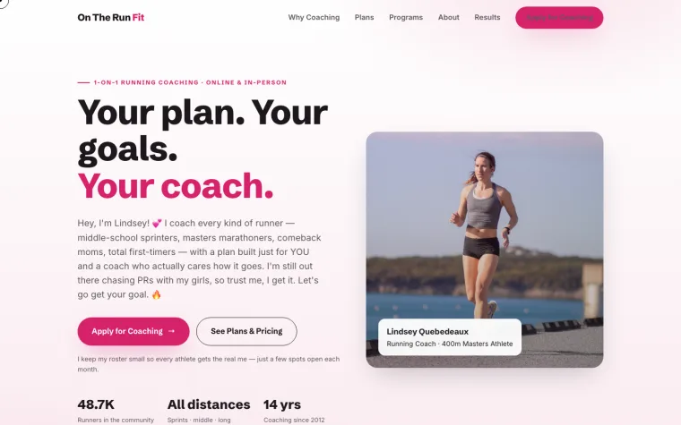
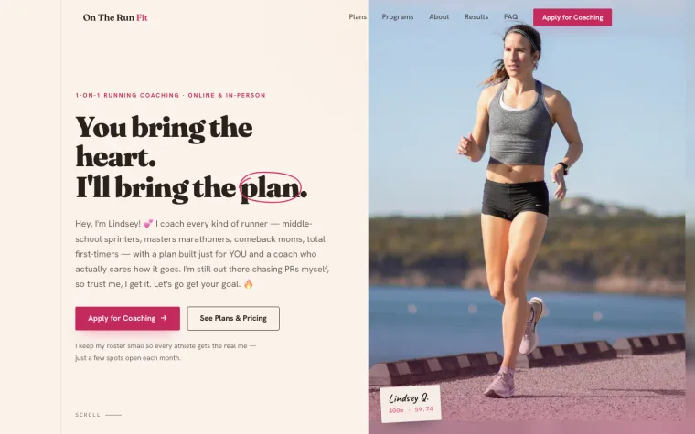
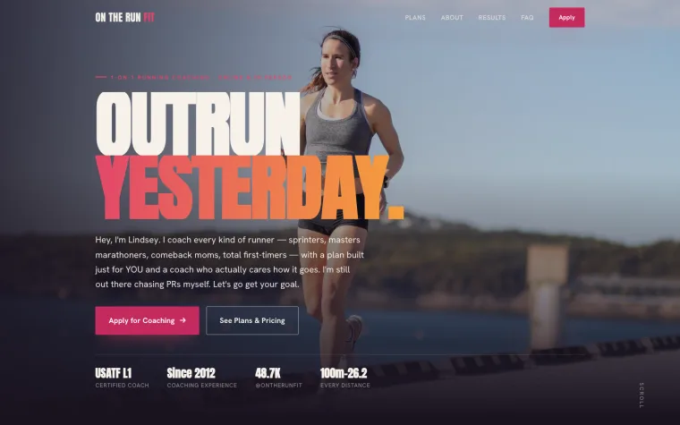
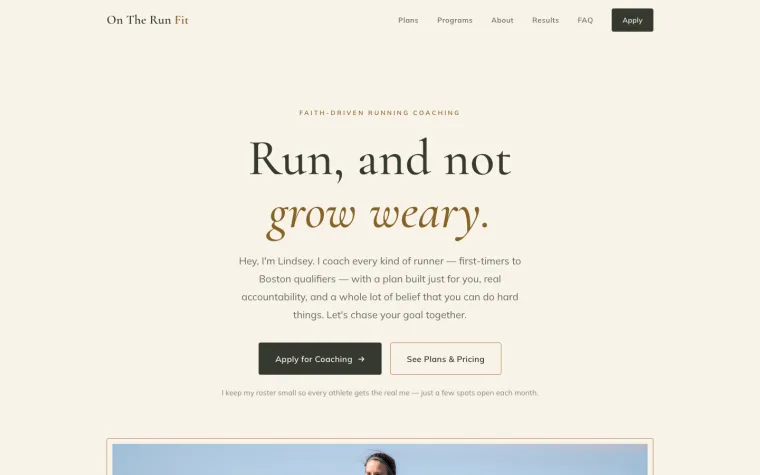
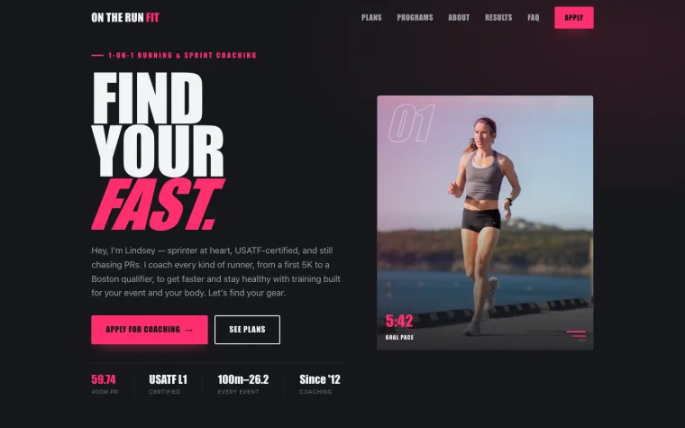
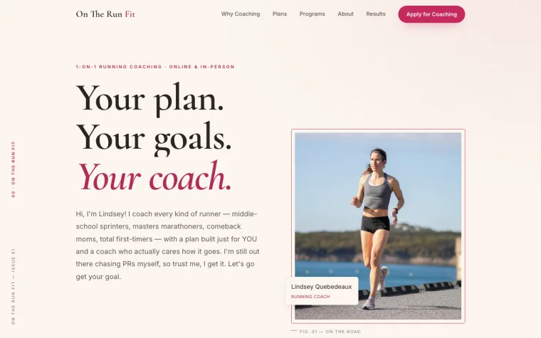

On The Run Fit · Website Preview
Six directions. Pick the one that feels most like you.
Hi Lindsey! Here are six complete looks for your new site — same real photos, your real plans, and your own words in every one. Click any one to open the full live page, scroll around, and tell Anthoney which feels right. Mixing ideas between them is totally fair game too.
take your time — they're all yours 💕
Classic
The original look you liked — bright, friendly, and clean, with soft pink accents and approachable rounded cards. Warm and welcoming.

Journal
A warm, editorial "training journal" — elegant serif type on oat paper, hand-drawn marker accents, and taped photos of your real athletes. Personal and premium.

Cinematic
Bold and dramatic — big stadium-style type on a dark, full-bleed photo, with a sunset raspberry-to-amber glow. High-energy and unmistakably athletic.

Sanctuary
Calm, airy, and elegant — a modern "country bible study" feel with delicate gold lines, lots of white space, a refined serif, and Isaiah 40:31 at its heart. Faith-forward and understated.

Track
Fast and athletic — charcoal and black with sharp, electric hot pink, condensed track-style type, lane lines, and stopwatch splits. Built to look fast.

Refined
The blend you described — Classic's warmth and friendly pink, elevated with an elegant serif, airy white space, and delicate hairline accents. Fully secular; all about coaching athletes.
All six are real, working pages — the application form, plans, programs, FAQ, and your athlete results are built into each. A couple of links (the self-guided program checkouts and the form's destination) just need their real URLs pasted in once you've picked. Tell me which look you love and I'll make it the live site.